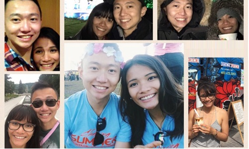

Posted on Feb 2 at 10:37 PM
It’s official! I’m moving on from Shell to return to Toronto to begin a new chapter of my career and my life.
It’s surreal to have grown up in Toronto, moved away for good (or, so I thought at the time), and to come back full-circle to Toronto as a mature adult full of new experiences and invigorated with aspirations to make positive change through my passions for energy, technology and solving problems.
In the last two and a half years, my adventure has seen both defeats and triumphs as I’ve opted to try new things, learning and making plenty of mistakes along the way. In that time, some people have come into my life as peers, friends, mentors and ultimately, as partners invested in my well-being and success.
“They fearlessly enter the fray with us as we throw ourselves against life’s challenges. They celebrate with us when we win. They keep us grounded and centered. They comfort us when we are weary and beaten down, and they help us pick ourselves up so that we can continue fighting the good fight. Without them we would be less. Incomplete. Incapable of achieving our full potential.”
- Kevin Scott, CTO @ Microsoft
Partnership is the critical factor in the success of companies, teams and projects. When I think about my own career, I’ve had many partners who have contributed to my success.
I’m the average of my closest friends, and I’ve been fortunate to be surrounded by so many. In particular, I thank Benzi, Aaron, Norman, Willy, Jona and Kelly who have seen the biggest changes over the years becoming the person I am today.
As mentors from afar that I don’t know personally (although I’ve met one and hope to meet them all), I owe my sincerest appreciation to these 5 authors for their encouragement and wisdom: Brett Wilson, Andrew Chen, Paul Graham, Ben Horowitz and Gary Vaynerchuk. I have learned about the priorities, pursuit of purpose, and realities in life, and I will no doubt continue to learn these for years to come.
I’d also like to thank my mentors who have acted as reliable sounding boards, listening when I need to externalize my thoughts, guiding me to make my own decisions, teaching me how to learn and working together on amazing projects. Specifically, I thank Mark for reaching out to plant the seed of thinking big in my career. I thank Kelly at Shell for sharing in my passions, motivations and aspirations. I thank Jared at Shell for challenging me to envision my future and address in detail how to make it a reality. I thank Norman for the encouragement that, with time and hard work, I am very capable of learning and it’s never too late to grow. And I thank Paul for your contagious discontent with the status quo, and the opportunity to build some cool things together.
So. All of this was actually to set up for the next bit, which for me, is the most important, powerful, productive, and rewarding partnership in my life: the partnership I have with Deanne. Deanne came into my life as I entertained starting my career in Calgary, Alberta. As it turned out, I started at Shell in Calgary one year later and began a roller coaster of adventures to Peace River, Fort Saint John, Houston, Austin, Las Vegas, San Francisco. Over the 2+ years, I learned what it meant to feel, love, dream, think for yourself and be different. All this, I learned with Deanne in my life first as friends, then best friends, and now as my companion.
I’m so blessed to have had Deanne navigate the uncertainty of life with me. It has never been easy, but we’ve always been there to support each other, one helping the other push through the difficulty of the moment, ultimately knowing that we are trying to accomplish the same goal of creating the greatest positive impact for those in need.
So, as I take this next step into uncertainty, I’d like to thank my most important partner for always being there for me, and being a sap to tell her publicly how truly grateful I am for everything that she does for me.